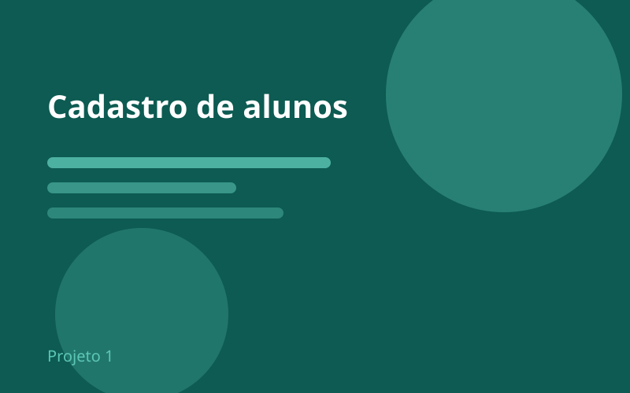
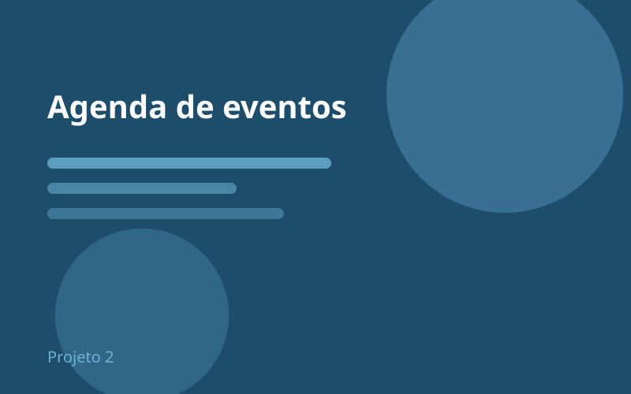
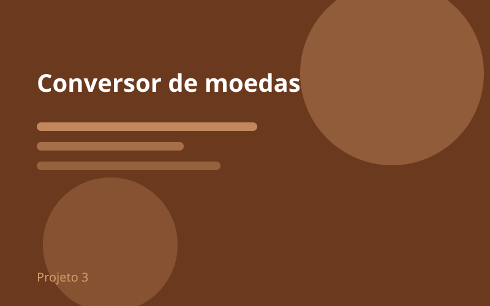
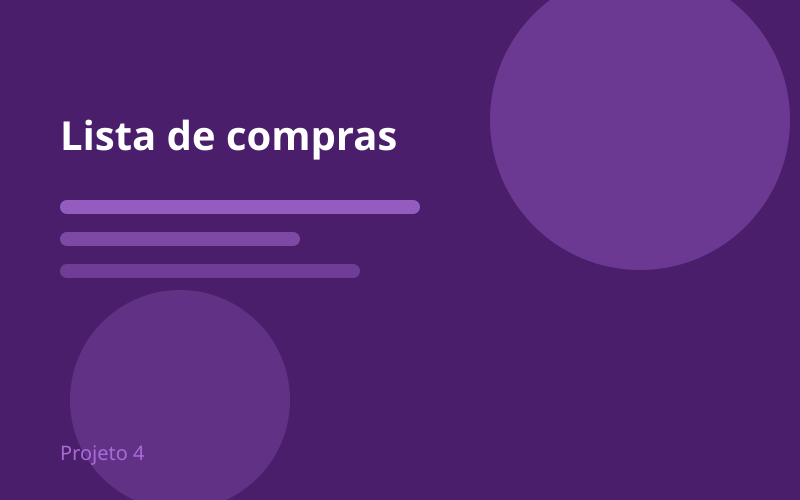
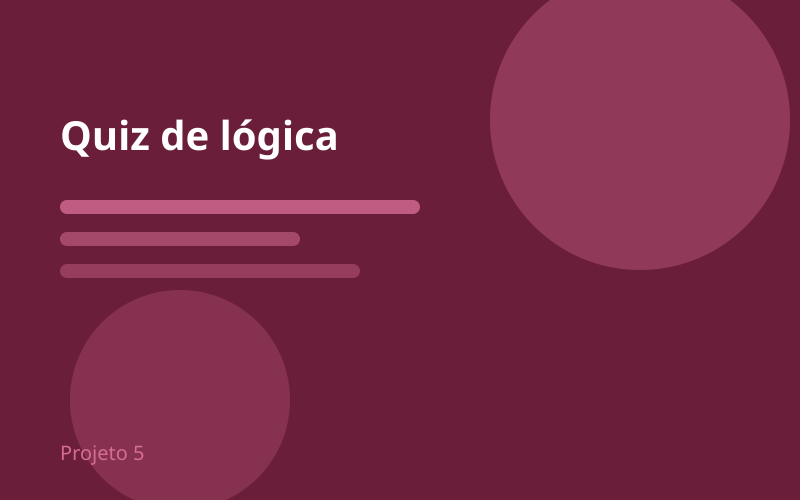
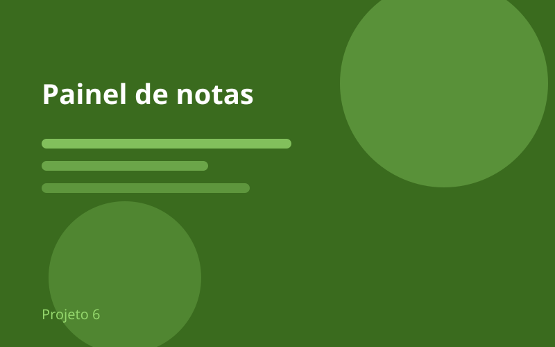

Cadastro de alunos
Formulário com validação de campos obrigatórios e mensagens de erro.

Estudante de Sistemas de Informação · 2º período






Formulário com validação de campos obrigatórios e mensagens de erro.
Listagem com filtro por categoria e ordenação por data.
Conversão entre três moedas com cotação fixa.
Itens adicionados dinamicamente com cálculo do total.
Dez perguntas de múltipla escolha com pontuação ao final.
Média por disciplina e destaque para situação de aprovação.
João Victor Silva Melo é estudante de Sistemas de Informação na ESAMC e técnico em Internet das Coisas (IoT) formado pelo IFTM - Campus Uberlândia.
Atualmente no 2º período (noturno), concilia a rotina com os estudos. Seu foco principal é aprofundar suas habilidades em lógica e linguagens de programação, como Python e Java, além de tecnologias Web, com o objetivo de conquistar sua primeira oportunidade de estágio na área.